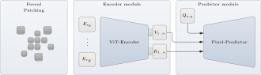
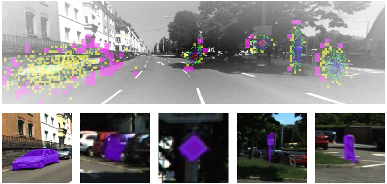
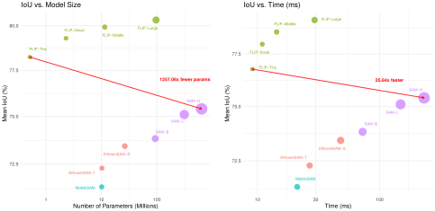
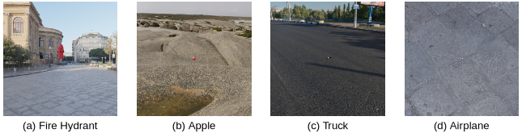

Current state-of-the-art segmentation models encode entire images before focusing on specific objects.
As a result, they waste computational resources—particularly when small objects are to be segmented in high-resolution scenes.
We introduce FLIP (Fovea-Like Input Patching), a parameter-efficient vision model that realizes object segmentation through biologically-inspired top-down attention.
FLIP selectively samples multi-resolution patches centered on objects of interest from the input.
As a result, it allocates high-resolution processing to object centers while maintaining coarser peripheral context.
This off-grid, scale-invariant design enables FLIP to outperform META's Segment Anything models (SAM) by large margins:
With more than 1000x fewer parameters, FLIP-Tiny (0.51M parameters) reaches a mean IoU of 78.24% while SAM-H reaches 75.41% IoU (641.1M parameters).
FLIP-Large even achieves 80.33% mean IoU (96.6M parameters), still running about 6× faster than SAM-H.
We evaluate on six benchmarks in total.
In five established benchmarks (Hypersim, KITTI-360, OpenImages, COCO, LVIS) FLIP consistently outperforms SAM and various variants of it.
In our novel ObjaScale dataset, which stress-tests scale invariance with objects ranging from 0.0001% up-to 25% of the image area, we show that FLIP segments even very small objects accurately, where existing models fail severely.
FLIP opens new possibilities for real-time, object-centric vision applications and offers much higher energy efficiency.
We believe that FLIP can act as a powerful foundation model, as it is very well-suited to track objects over time, for example, when being integrated into slot-based scene segmentation architectures.
Key Results
80.33%
FLIP-Large mean IoU (vs 75.41% SAM-H)
1,257×
Fewer parameters (FLIP-Tiny vs SAM-H)
6×
Faster inference (FLIP-Large vs SAM-H)
78.24%
FLIP-Tiny mean IoU (0.51M parameters)
Bottom Line: FLIP achieves superior segmentation performance with orders of magnitude fewer parameters than existing methods,
making it ideal for real-time applications and energy-efficient deployments.
Method Overview

FLIP architecture diagram.
The Foveal Patching module dynamically samples multi-resolution patches centered around objects of interest.
These patches are embedded into a unified latent space using resolution-specific Patch Embedding Modules
(Er0} to ErK}).
The Vision Transformer Encoder processes the embedded patches, generating keys
K1..n and values V1..n.
The Pixel-Predictor performs attention over queries derived from pixel coordinates
Qx,y, enabling instance segmentation with pixel-level precision.
FLIP introduces a novel fovea-like input patching mechanism that:
Dynamically samples multi-resolution patches centered around objects of interest
Allocates high-resolution processing to object centers while maintaining coarse peripheral context
Operates off-grid and scale-invariantly, robust to large variations in object size
Enables pixel-level segmentation through efficient attention mechanisms

Visualization of our FLIP (Fovea-Like Input Patching) approach applied to an image from the
KITTI-360 dataset, showcasing potential applications in autonomous driving.
The figure illustrates how our model dynamically focuses on multiple objects within a complex urban scene by
allocating multi-resolution patches centered around estimated object locations.
Higher-resolution patches (smaller sizes) are concentrated on critical areas such as vehicles and road signs,
emulating a foveal vision system, while lower-resolution patches (larger sizes) cover peripheral regions to
enable the consideration of the surrounding context.
Patches are color-coded by size:
purple for 16×16 patches,
yellow for 8×8,
green for 4×4,
blue for 2×2, and
red for 1×1.
Performance Comparison

Mean IoU across six datasets (Hypersim, KITTI-360, OpenImages, COCO, LVIS, ObjaScale) plotted against model parameters and inference time.
Model
Parameters
Mean IoU (%)
Inference Time (ms)
Speed-up vs SAM-H
SAM-H
641.1M
75.41
232.04
1.0×
SAM-L
312.3M
75.10
148.78
1.6×
SAM-B
93.7M
73.82
72.67
3.2×
FastSAM-s
11.8M
44.58
9.94
23.3×
FastSAM-x
72.2M
48.04
24.32
9.5×
MobileSAM
10.13M
71.33
21.15
11.0×
EfficientSAM-T
10.22M
72.29
26.75
8.7×
EfficientSAM-S
26.41M
73.43
47.98
4.8×
FLIP-Tiny
0.51M
78.24
9.82
23.6×
FLIP-Small
2.3M
79.29
12.19
19.0×
FLIP-Middle
11.5M
79.93
17.54
13.2×
FLIP-Large
96.6M
80.33
38.65
6.0×
Scale Invariance: ObjaScale Dataset
We introduce ObjaScale, a novel benchmark specifically designed to stress-test scale invariance
with objects ranging from 0.0001% up to 25% of the image area. FLIP demonstrates superior performance
on small objects where existing models fail severely.
IoU heatmaps on ObjaScale showing relative vs. absolute mask size. FLIP-Large maintains strong accuracy
even for very small objects, while SAM variants suffer sharp performance drops.

Examples from ObjaScale dataset showing diverse objects at varying scales rendered with
high-resolution HDRI backgrounds to challenge segmentation models.
🚀 Flip-Tiny Interactive Demo
Try FLIP-Tiny directly in your browser! Upload an image, click on the Ellipse view to set the Gaussian center,
adjust parameters using the control grid, and see real-time object segmentation. Ensure the selected object fits entirely within the ellipse, without overlap, for optimal results.
Click "Sample Patches" to extract patches, then "Run Inference" to predict the mask. The ellipse shows the (2σ) area of the 2D Gaussian input prompt.
0.00
0.00
0°
0.20
0.20
Input Prompt (2σ) Ellipse
Input Prompt 2D Gaussian
Sampled Patches
Predicted Mask
1.44
2.67
512
Loading ONNX model...
Note: The demo runs FLIP-Tiny (0.51M parameters) entirely in your browser using ONNX Runtime Web and WebAssembly.
Performance depends on your hardware. For best results, use a modern browser with hardware acceleration enabled.
Citation
@article{traub2025flip,
title={Looking Locally: Object-Centric Vision Transformers as Foundation Models for Efficient Segmentation},
author={Traub, Manuel and Butz, Martin V},
journal={arXiv preprint arXiv:2502.02763},
year={2025}
}
Acknowledgments
This work received funding from the Deutsche Forschungsgemeinschaft (DFG, German Research Foundation) under
Germany's Excellence Strategy – EXC number 2064/1 –Project number 390727645 as well as from the Cyber Valley
in Tübingen, CyVy-RF-2020-15. The authors thank the International Max Planck Research School for Intelligent
Systems (IMPRS-IS) for supporting Manuel Traub, and the Alexander von Humboldt Foundation for supporting Martin Butz